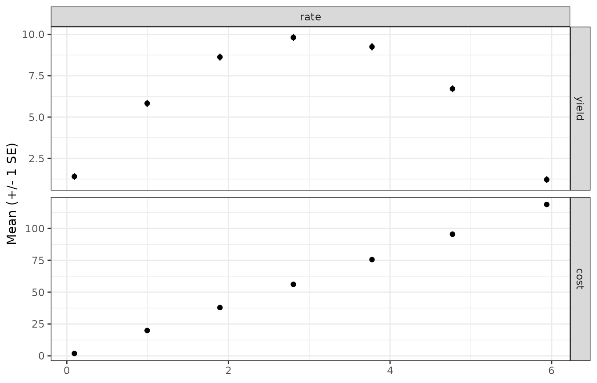

tidyagsim extends AlphaSimR, and
any other simulator you can call from R, with the grammar of tidymodels. If you have tuned a
model with tune_grid(), you already know how to run a
simulation experiment with it:
| tidymodels | tidyagsim | What it holds |
|---|---|---|
| parsnip model spec | simulation spec: alphasim_program(),
line_pipeline(), mapping_population(),
sim_function()
|
the simulator and its arguments |
tune() |
tune() |
“let the tuner choose this argument” |
| dials parameters |
extract_parameter_set_dials(), n_lines(),
filial_generation(), … |
ranges of tuned arguments |
| rsample resamples |
sim_replicates(), sim_scenarios()
|
paired random seeds and assumption scenarios |
yardstick metric_set()
|
sim_metric_set() |
what to measure, and which direction is better |
tune_grid(), tune_race_anova(),
tune_bayes()
|
tune_grid(), tune_race(),
tune_bayes()
|
how to search |
collect_metrics(), show_best(),
select_by_one_std_err()
|
same names, plus pareto_front(),
compare_designs()
|
tidy results |
| workflowsets |
sim_set(), sim_map(),
rank_results()
|
comparing several specs at once |
A simulation spec
A spec records the arguments of one simulator. The simplest is any R
function that takes its arguments and a seed and returns a
named list of outcomes. Here is a toy “trial” whose yield peaks at a
seeding rate of 3:
trial <- sim_function(
function(rate, noise, seed) {
list(yield = 10 - (rate - 3)^2 + rnorm(1, sd = noise), cost = 20 * rate)
},
rate = tune(), noise = 1,
params = list(rate = sim_param(c(0, 6), type = "double", label = "Seeding rate"))
)
trial
#> sim_function simulation spec (engine: R)
#>
#> Tuned arguments:
#> rate = tune()
#>
#> Fixed arguments:
#> noise = 1tune() marks rate for tuning;
noise stays fixed. The parameter set is a dials object, so
ranges change with update() exactly as in tidymodels:
extract_parameter_set_dials(trial)
#> Collection of 1 parameters for tuning
#>
#> identifier type object
#> rate rate nparam[+]
#> Replicates are paired seeds
In a simulation, the unit of replication is a random seed. Every design runs on the same seeds (common random numbers), so differences between designs are paired and much less noisy than independent runs.
reps <- sim_replicates(20)
reps
#> # Simulation replicates: 20 paired seeds (1..20) x 1 scenario(s)
#> # A tibble: 20 × 2
#> id seed
#> <chr> <int>
#> 1 Rep01 1
#> 2 Rep02 2
#> 3 Rep03 3
#> 4 Rep04 4
#> 5 Rep05 5
#> 6 Rep06 6
#> 7 Rep07 7
#> 8 Rep08 8
#> 9 Rep09 9
#> 10 Rep10 10
#> 11 Rep11 11
#> 12 Rep12 12
#> 13 Rep13 13
#> 14 Rep14 14
#> 15 Rep15 15
#> 16 Rep16 16
#> 17 Rep17 17
#> 18 Rep18 18
#> 19 Rep19 19
#> 20 Rep20 20Metrics have directions
metrics <- sim_metric_set(sim_metric("yield", "maximize"), cost)
metrics
#> A simulation metric set:
#> yield maximize yield
#> cost minimize Total costcost is built in (minimize); yield is
defined on the spot.
Tune
res <- tune_grid(trial, reps, grid = 7, metrics = metrics)
res
#> # Simulation study (grid): 7 designs x 20 replicates x 1 scenario(s) = 140 simulations
#> # Spec: sim_function; metrics: yield, cost
#> # Best by yield:
#> # A tibble: 3 × 6
#> rate .metric mean n std_err .config
#> <dbl> <chr> <dbl> <int> <dbl> <chr>
#> 1 2.80 yield 9.81 20 0.209 Config004
#> 2 3.78 yield 9.25 20 0.209 Config005
#> 3 1.89 yield 8.63 20 0.209 Config003
collect_metrics(res)
#> # A tibble: 14 × 7
#> rate .metric direction mean n std_err .config
#> <dbl> <chr> <chr> <dbl> <int> <dbl> <chr>
#> 1 0.0933 yield maximize 1.40 20 0.209 Config001
#> 2 0.0933 cost minimize 1.87 20 0 Config001
#> 3 0.994 yield maximize 5.83 20 0.209 Config002
#> 4 0.994 cost minimize 19.9 20 0 Config002
#> 5 1.89 yield maximize 8.63 20 0.209 Config003
#> 6 1.89 cost minimize 37.9 20 0 Config003
#> 7 2.80 yield maximize 9.81 20 0.209 Config004
#> 8 2.80 cost minimize 56.1 20 0 Config004
#> 9 3.78 yield maximize 9.25 20 0.209 Config005
#> 10 3.78 cost minimize 75.5 20 0 Config005
#> 11 4.77 yield maximize 6.71 20 0.209 Config006
#> 12 4.77 cost minimize 95.5 20 0 Config006
#> 13 5.94 yield maximize 1.21 20 0.209 Config007
#> 14 5.94 cost minimize 119. 20 0 Config007Every number comes with its Monte Carlo standard error. Pick designs with the usual helpers:
show_best(res, metric = "yield", n = 3)
#> # A tibble: 3 × 6
#> rate .metric mean n std_err .config
#> <dbl> <chr> <dbl> <int> <dbl> <chr>
#> 1 2.80 yield 9.81 20 0.209 Config004
#> 2 3.78 yield 9.25 20 0.209 Config005
#> 3 1.89 yield 8.63 20 0.209 Config003
# The cheapest design within one standard error of the best yield:
select_by_one_std_err(res, cost, metric = "yield")
#> # A tibble: 1 × 2
#> rate .config
#> <dbl> <chr>
#> 1 2.80 Config004
# Designs no other design beats on both yield and cost:
pareto_front(res)
#> # A tibble: 4 × 6
#> rate yield yield_se cost cost_se .config
#> <dbl> <dbl> <dbl> <dbl> <dbl> <chr>
#> 1 0.0933 1.40 0.209 1.87 0 Config001
#> 2 0.994 5.83 0.209 19.9 0 Config002
#> 3 1.89 8.63 0.209 37.9 0 Config003
#> 4 2.80 9.81 0.209 56.1 0 Config004
Scenarios: robust to what you assumed?
Some inputs are not choices but assumptions. Cross them into scenarios and every design is run in every scenario:
noisy <- sim_replicates(20, scenarios = sim_scenarios(noise = c(0.5, 3)))
res_sc <- tune_grid(trial, noisy, grid = 5, metrics = metrics)
collect_metrics(res_sc) |> subset(.metric == "yield")
#> # A tibble: 10 × 8
#> rate .metric direction mean n std_err .scenario .config
#> <dbl> <chr> <chr> <dbl> <int> <dbl> <chr> <chr>
#> 1 0.0933 yield maximize 1.48 20 0.104 noise=0.5 Config001
#> 2 0.0933 yield maximize 1.11 20 0.627 noise=3 Config001
#> 3 1.41 yield maximize 7.39 20 0.104 noise=0.5 Config002
#> 4 1.41 yield maximize 7.02 20 0.627 noise=3 Config002
#> 5 3.04 yield maximize 9.93 20 0.104 noise=0.5 Config003
#> 6 3.04 yield maximize 9.56 20 0.627 noise=3 Config003
#> 7 4.45 yield maximize 7.83 20 0.104 noise=0.5 Config004
#> 8 4.45 yield maximize 7.46 20 0.627 noise=3 Config004
#> 9 5.98 yield maximize 1.07 20 0.104 noise=0.5 Config005
#> 10 5.98 yield maximize 0.697 20 0.627 noise=3 Config005Smarter searches
tune_race() drops designs that are clearly worse after a
few replicates, and tune_bayes() proposes new designs with
a Gaussian process. Both answer the same questions as
tune_grid() with fewer simulations. With constraints,
tune_bayes() searches directly for, say, the cheapest
design that keeps yield above 9:
bo <- tune_bayes(trial, sim_replicates(10), metrics = sim_metric_set(cost, sim_metric("yield")),
constraints = list(yield = 9), initial = 4, iter = 8)
select_best(bo, metric = "cost", constraints = list(yield = 9))
#> # A tibble: 1 × 2
#> rate .config
#> <dbl> <chr>
#> 1 2.12 Config005Real simulators
The toy trial above shows the grammar. The same verbs run real breeding simulations:
-
alphasim_program()turns your own AlphaSimR script into a spec: write one replicate as a function of the founders,SPand your design arguments.line_pipeline()is a ready-made soybean-style line pipeline built on it. Start with the Why simulate? article. -
mapping_population()simulates QTL mapping populations (F2, RIL, BCsFt, NAM, advanced-backcross NAM and MAGIC). Seevignette("mapping-design"). -
breeding_program()runs a breedsim flowchart program from the desktop app; its fields are tuned by"stage.field"path.